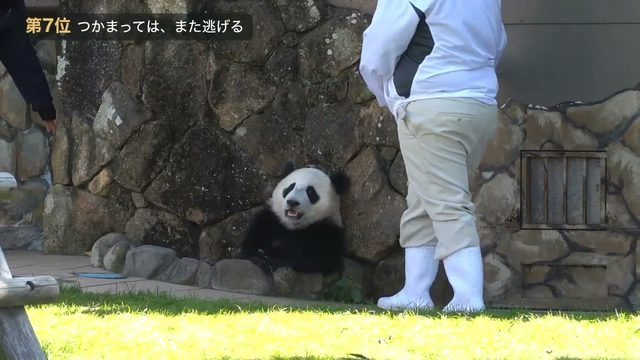

楓浜(ふうひん)が飼育員さんにつかまっては、また逃げる
楓浜(ふうひん)が、抱えようとする飼育員さんの手をすり抜けて逃げ、扉の小窓にしがみついた場面です。
▶ 再生すると、動画の 2:57 からこの場面が始まります。
- 撮影日2021年11月4日
- 個体楓浜
- 年齢生後11か月
- 飼育員さん登場します
- 場面の長さ約1分
芝生の上で、飼育員さんがかがんで楓浜を抱えようとします。
楓浜は足もとをすり抜け、岩の壁ぞいを歩いて逃げていきます。
最後は扉の小窓の格子に、おててでしがみつきます。

YouTubeでこの場面から見る 楓浜(ふうひん)の動画をもっと見る
この場面が入っている動画: 【永久保存版】飼育員さんが好きすぎる天才パンダ楓浜🐼ふうひん伝説 名シーンTOP10